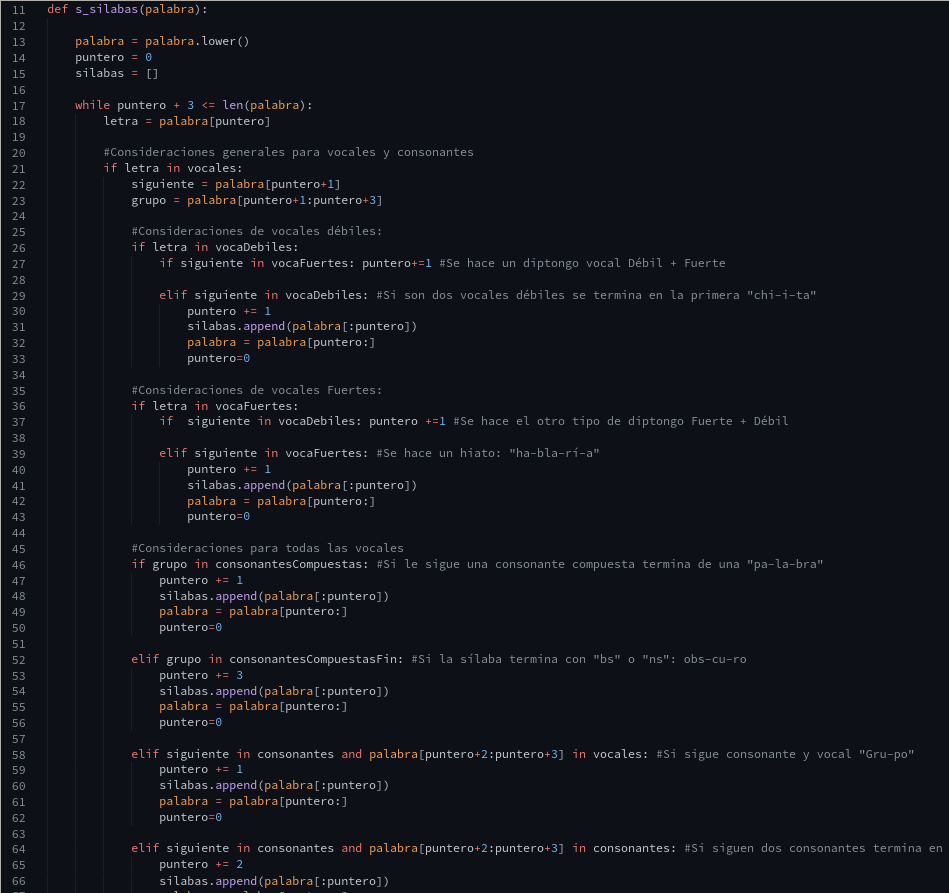

---
| Acción | 41 |
| Creatividad | 62 |
| Servicio | 40 |
---
Canserbero, 2011
---
| Reflexión 15 | Reflexión 16 |
|---|---|
| Reflexión 17 | |
| 
Haz y no questiones. |
|
| Reflexión 18 | |
| Reflexión 19 | Reflexión 20 |
| Reflexión 21 | |
---
Ain Bolaños Cortés - jqp983 - A01660732